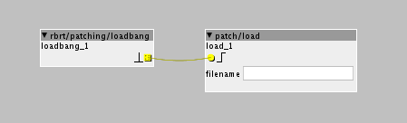

Hi All-
I'd like to upload the patch that is saved to my board-but I believe this is not possible. Is there a way of finding out from the board what the patch is called? I will have saved it somewhere but I am not sure which one it is.
Thanks

Hi All-
I'd like to upload the patch that is saved to my board-but I believe this is not possible. Is there a way of finding out from the board what the patch is called? I will have saved it somewhere but I am not sure which one it is.
Thanks
It's indeed not possible to open a compiled patch on the board from the editor.
You could open the File Manager on the editor to see the patch you uploaded on your board and build a small loader patch to open the patch you want.
You can use patch/load (in which you enter the patch path and name) and a loadbang to trigger the load.
